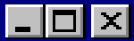
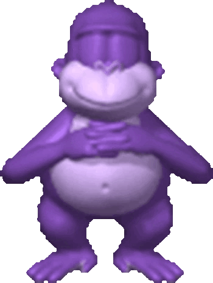

Bonzi Buddy was a Spyware well known in 1999 for acting like an asistant, similar to clippy from Windows XP but with an outstanding range of things he could do. But as any other spyware, what it really did behind the scene's record your passwords, bank information, claiming it could buy things online for you so you didn't have to compromise that information, and even record you if you had a camera.